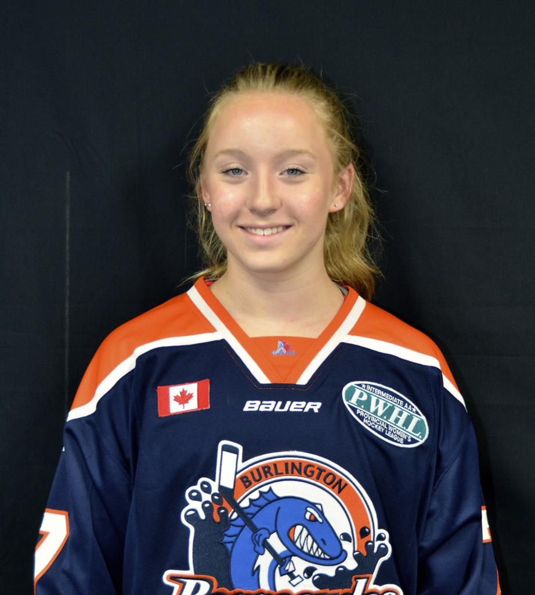

I would like to tell you a little bit about myself that include both on and of the ice. First some vital statistics

| Grad Year | 2016 or 2017 |
| Height | 5' 6" |
| Weight | 156 lbs. |
| Born | February 1998 |
| Shoots | Left |
| Position | Defence (#42) |
| Current Team | Burlington Barricudas Junior |
| Other Sports | Gymnastics, Field Hockey, Soccer |
Background
I started playing hockey when I was 6 years old playing house league Tyke and then rep Novice and Atom. At the same time I was heavily involved in gymnastics and was training 20 hours a week. Needless to say I was very busy between school, hockey and gymnastics. In 2009 I decided I wanted to make the national gymnastics team but this required 31 hours of training per week. It was clear I couldn't do both not because I didn't want to, but I couldn’t physically be in 2 places at once and with hockey being a team sport I couldn't let the team down. So instead I decided to play boys house league hockey where the time commitment was much less and I focus on gymnastics. In 2 years I competed at the national level and came 4th overall at the Canadian National Championships held in PEI. I was thrilled with my performance.
In 2011 I decided i missed hockey and the comradery of the girls and rejoined the competitive girls hockey and have never looked back.
There are so many things I love about hockey. I love battling hard for the puck and I love skating fast and hard. I love when our team scores a goal and how we are all in the game together. Probably the best thing I love about hockey are the friends I make. Sometimes I see an old teammate in the arena that I haven't seen in a few years and after a few minutes talking it’s like we are still playing on the same team. I want to take this experience into my post graduate years because I love the sport so much.